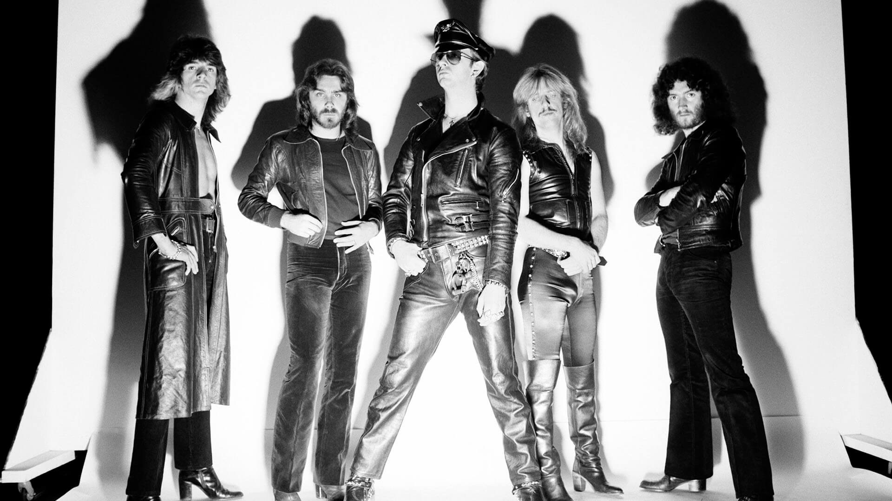

Heavy Metal
Hasta el día de hoy no existe un consenso preciso que defina cuál fue la primera banda de heavy metal, algunos mencionan a Led Zeppeliny Deep Purple, mientras que otros dejan ese sitial exclusivamente a Black Sabbath. Por aquel mismo tiempo, a finales de los años 1960 y principios de los años 1970, surgieron muchas bandas que si bien no tuvieron el impacto mediático de las mencionadas anteriormente, también fueron de gran aporte al nacimiento del género como Blue Cheer, Blue Öyster Cult, Sir Lord Baltimore, Budgie, UFO y Wishbone Ash; posteriormente surgieron agrupaciones como Scorpions, Rainbow, Judas Priest (estos últimos introdujeron la combinación del doble bombo con ritmos rápidos en semicorchea de bajo y guitarra, y eliminaron las últimas influencias del blues) y Motörhead (quienes incluyeron algunos elementos del punk rock, dándole un nuevo énfasis a la agresividad y velocidad). En la segunda mitad de los setenta y en pleno auge del punk surgió la Nueva ola del heavy metal británico (abreviada comúnmente como NWOBHM) liderada por Iron Maiden, Saxon y Def Leppard y de la que formaron parte los muy influyentes ex post Diamond Head o Venom, que dio un nuevo valor al género derivando en el nacimiento de una posterior subcultura a ambos lados del Atlántico (influyendo la NWOBHM notablemente en el surgimiento de nuevas bandas estadounidenses como Manowar, Savatage o Queensrÿche a finales de esa década).
Con la llegada de los ochenta comenzaron a aparecer los primeros subgéneros del metal; por un lado el glam metal (encabezado por bandas como Europe, Bon Jovi, Van Halen, W.A.S.P., Whitesnake o Mötley Crue) que lideró las ventas y las listas musicales de los principales mercados y por el otro el metal extremo que provenía de la escena underground. De este último surgió con una amplia popularidad el thrash metal liderado por los llamados "Big Four" estadounidenses (Metallica, Megadeth, Slayer y Anthrax) y con una importante repercusión en Alemania (surgiendo bandas como Kreator, Sodom, Destruction o Tankard). Sin embargo, en la década posterior dicho éxito comercial decayó ante el auge de nuevos sonidos alternativos no propios del metal, si bien en Europa continental, Japón y Latinoamérica siguieron siendo populares y vivieron su auge subgéneros como el power metal (destacando bandas como Helloween, Blind Guardian, Gamma Ray, Stratovarius o Rhapsody), del mismo modo que surgían y resistían comercialmente a nivel global otros nuevos subgéneros, como el groove (Pantera). A fines de dicha década surgieron géneros todavía más extremos, como el death metal y el black metal, que tuvieron un auge a inicios de la década de los noventa.
Llegado el nuevo milenio, existía ya una infinidad de subgéneros, cada uno con características específicas y con influencias de otros estilos como la música clásica, música industrial, funk y el rap, por ejemplo, que han ampliado la definición de metal hasta llegar a la actualidad. A su vez, su popularidad se ha incrementado durante los últimos años principalmente en Europa, Estados Unidos, Latinoamérica y Japón. La música metal tiene una aceptación más favorable en los países nórdicos que en otras regiones debido a la apertura social y política en estas regiones, especialmente Finlandia ha sido a menudo llamada la "Tierra Prometida del Heavy Metal", porque hoy en día hay más de 50 bandas de metal por cada 100.000 habitantes, más que cualquier otra nación del mundo.